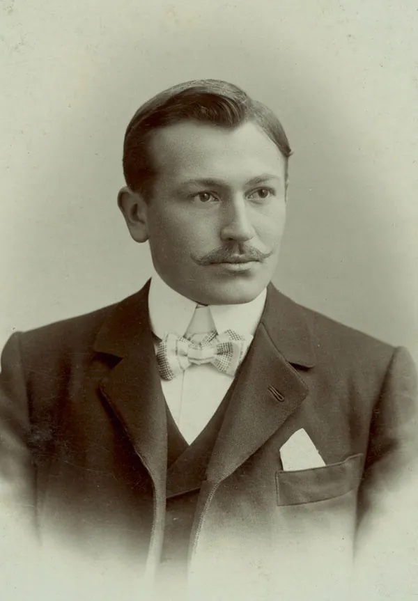

Our Story
A Legacy of Excellence

The Visionary
Lucien Marchand
In 1926, a young Lucien Marchand founded the atelier that would become AURELIAN. His vision was simple yet ambitious — to place a reliable and precise watch on every wrist. What followed was a century of innovation that shaped how we think about watchmaking.
Marchand's relentless pursuit of perfection led to a series of landmark inventions — the sealed Halcyon case, the self-winding Aurum rotor, and the Voyager dual-time complication.
Our Journey
100 Years of History
The Beginning
Lucien Marchand and Adèle Roux found the atelier in Neuchâtel, with a vision to create reliable wristwatches.
First Precision Certificate
An AURELIAN calibre earns its first in-house precision certificate, setting the standard for every watch that follows.
Halcyon Case
AURELIAN patents the Halcyon — a sealed, dustproof wristwatch case.
Aurum Rotor
AURELIAN introduces the self-winding Aurum rotor — a revolution in the atelier's watchmaking.
Abyss
The Abyss is introduced — our first diver's watch, waterproof to 100 metres.
Circuit
The Circuit chronograph is launched — destined to become the atelier's most celebrated sports watch.
New Manufacture
A purpose-built manufacture opens, bringing case, dial and movement making under one roof.
One Hundred Years
AURELIAN marks a century of crafting timepieces that define elegance, performance and enduring value.
What We Stand For
Our Values
Precision
Every AURELIAN is tested for precision — certified to perform to the highest standards of accuracy and reliability.
Excellence
From raw materials to the finished watch, every element of an AURELIAN is crafted to the most exacting standards.
Innovation
AURELIAN has been at the forefront of watchmaking innovation for a century — pioneering technologies that have shaped our craft.
Legacy
An AURELIAN is not just a watch — it is an heirloom. Crafted to be passed down through generations, retaining its value and beauty.
Giving Back
Our Philanthropy
Craft Education
The AURELIAN Foundation funds apprenticeships that train the next generation of watchmakers and artisans.
Ocean Stewardship
A share of every Abyss sold supports coastal clean-ups and marine research partners.
Community
Our atelier teams volunteer each year to support local schools, workshops and cultural projects.
Client Stories
What Our Clients Say
Elena R.
“Wearing the Solstice feels like carrying a small piece of history. The finishing is flawless.”
Marcus T.
“I wear my Abyss every dive season. It has never missed a beat, even at depth.”
Priya S.
“The Voyager has joined me on every trip for ten years. Two time zones, zero fuss.”
Time is the one luxury we cannot make more of — so we make every second worth wearing.